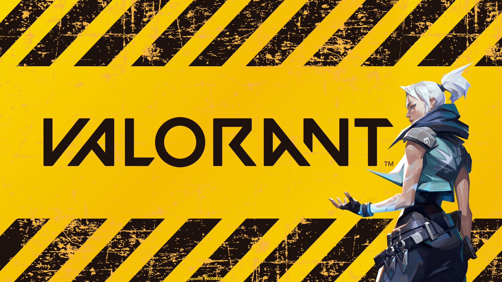

Maps
Select a Map

Standard Maps: Designed for the main game modes like Bomb Defusal (Plant/Defuse).
They feature two bomb sites (A and B), spawn areas for each team, and various obstacles and
pathways. Examples include Bind, Split, Ascent, Icebox, and Breeze.
Team Deathmatch Maps: These maps are specifically created for the Team Deathmatch
mode. They often have different layouts compared to standard maps, designed to facilitate
fast-paced, close-quarters combat.
Practice Maps: These are built to help new players learn the game mechanics and
practice their skills. "The Range" is a notable example, offering various training
scenarios.
Each map has unique features, such as teleporters in Bind, multiple bomb sites in Haven, or
interactive doors in Ascent. Understanding these elements is key to devising effective strategies
and improving your gameplay.